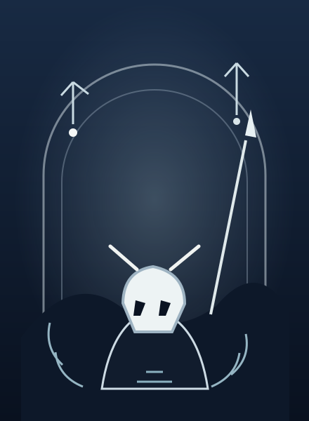

ORIGINAL UI EXPERIMENT · Hollow KnightEditable component specimen / responsive web01 — 03
Hollow KnightKINGDOM BELOW / FIELD JOURNAL
REFERENCE STUDY
Original names · synthetic state
Original names · synthetic state

ORIGINAL VECTOR ARTNO GAME CHARACTER OR LOGO
Quiet things have weight
Set a small collection of found charms into the worn ring before entering the next room.